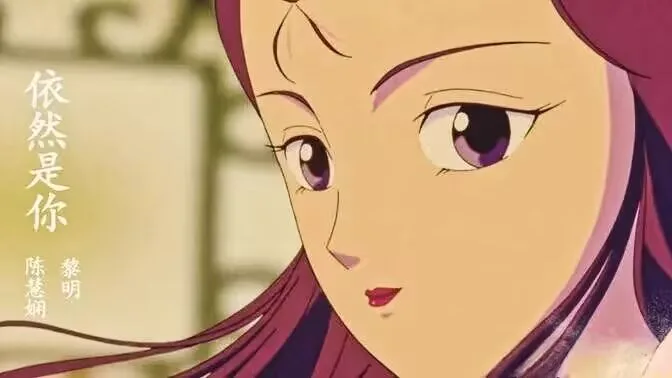
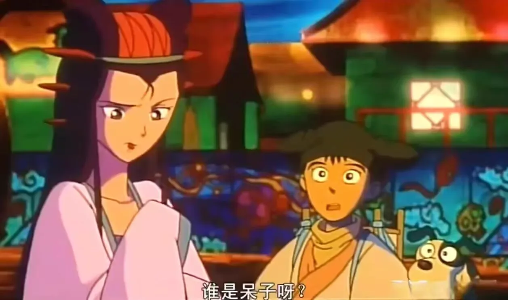
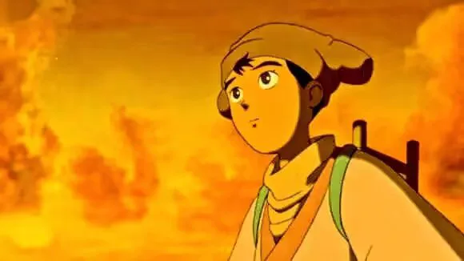
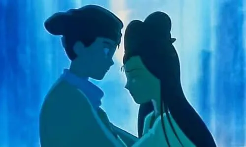
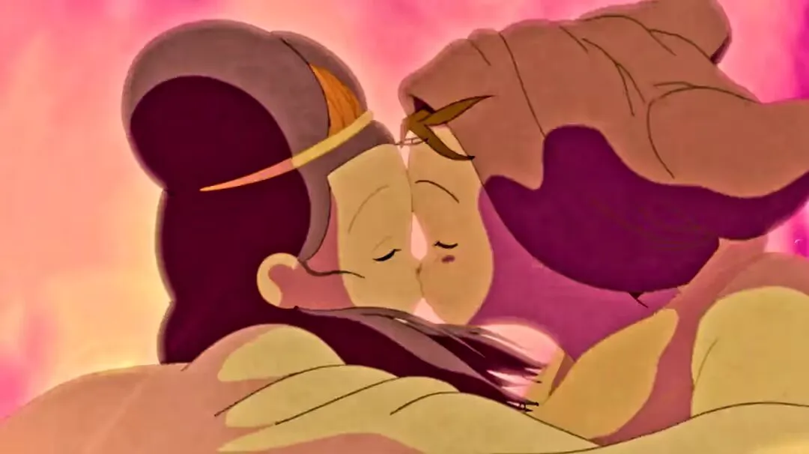
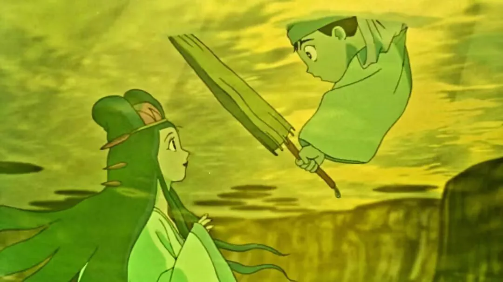
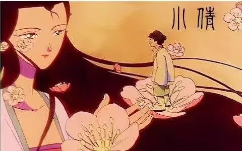

Journal · 2024-10-21
湖北省武汉市
2024年10月21日 20:16
ʘᴗʘ
管管小王纸 ：添加时光轴记录：周一好啊，各位友友们~今天格外冷注意保暖哦
今天小王纸给大家带来一部国漫中的沧海遗珠，开启活力满满的新的一周
【影视推荐】
《小倩》
在国漫的璀璨星河里，有一部不可忽视的佳作——由徐克编剧的香港动画电影《小倩》。
故事中的宁采臣情场失意，与小狗金坚四处要账为生。一次误入鬼界，他对女鬼小倩一见钟情。小倩虽一心为树妖姥姥吸取阳气，却在与宁采臣的相处中渐生情愫。他们一起历经生死，约定来生相伴，却在投胎过程中遭遇重重阻碍。
这部电影脑洞大开，传统与现代、人间与鬼蜮交织碰撞。一面是现实的传统中国山水庭院，一面是鬼蜮的现代社会科技机甲，独特的世界设定让人眼前一亮。
从时代背景来看，它更是特殊时代下冲突与融合的写照。97 年香港回归，香港人在中国传统文化和西方科技文明的夹缝中求存，电影仿佛是前殖民社会的隐喻。宁采臣这个四处奔波、无以为家的收账人，走在写着“孤独的路”的道上，郭北县里中洋杂糅，过去与现代交织，妖魔鬼怪满天飞舞，黑山老妖极端自恋，树精姥姥吸阳气美容，燕赤霞和白云因理念不同大打出手……每一个细节都仿佛是特殊时代下某种现实的映射。
总的来说，《小倩》整部动画天马行空、内容丰富，不求深刻，只求好看！







Oct 21, 2024 20:16
ʘᴗʘ
管管小王纸 ：Added a timeline entry: Happy Monday, everyone~ It's especially cold today, so bundle up and stay warm!
Today, Xiao Wangzhi brings everyone a hidden gem of Chinese animation to kick off a brand-new, energy-filled week.
[Movie Recommendation]
“Xiao Qian”
In the dazzling galaxy of Chinese animation, there is one masterpiece that cannot be overlooked—the Hong Kong animated film “Xiao Qian,” written by Tsui Hark.
In the story, Ning Caichen is unlucky in love and makes a living collecting debts with his little dog Jin Jian. After straying into the ghost realm, he falls in love at first sight with the female ghost Xiao Qian. Although Xiao Qian is intent on draining men's vital energy for the tree demon Lao Lao, she gradually develops feelings for Ning Caichen through their time together. They go through life and death together and promise to be companions in the next life, only to face numerous obstacles during reincarnation.
This film is wildly imaginative, interweaving and colliding tradition and modernity, the human world and the ghost realm. On one side is the realistic traditional Chinese landscape garden; on the other, the modern high-tech mecha of the ghost world—a unique world-building that is a feast for the eyes.
Viewed against its historical backdrop, it is even more a portrait of conflict and fusion in a special era. In 1997 Hong Kong was returned to China; Hong Kong people struggled to survive in the gap between traditional Chinese culture and Western technological civilization, and the film reads like a metaphor for pre-colonial society. Ning Caichen, the debt collector who roams ceaselessly with no home to call his own, walks along a road marked “the road of loneliness.” In Guobei County, Chinese and Western elements mingle, past and present interweave, demons and monsters swirl through the sky, the Black Mountain Old Demon is pathologically narcissistic, the tree spirit Lao Lao drains vital energy to beautify herself, and Yan Chixia and Baiyun come to blows over their differing ideals… every detail seems like a reflection of some reality of that special era.
All in all, “Xiao Qian” is a wildly imaginative animation rich in content—it doesn't aim to be profound, only to be fun to watch!
21 oct. 2024 20:16
ʘᴗʘ
管管小王纸 ：Ajout d'une entrée de chronologie : Bon lundi à tous~ Il fait particulièrement froid aujourd'hui, couvrez-vous bien !
Aujourd'hui, Xiao Wangzhi vous présente une perle oubliée de l'animation chinoise pour bien démarrer une nouvelle semaine pleine d'énergie.
[Recommandation de film]
« Xiao Qian »
Dans la brillante galaxie de l'animation chinoise, il existe un chef-d'œuvre incontournable : le film d'animation hongkongais « Xiao Qian », écrit par Tsui Hark.
Dans l'histoire, Ning Caichen est malchanceux en amour et gagne sa vie en recouvrant des dettes avec son petit chien Jin Jian. Après s'être égaré dans le monde des fantômes, il tombe amoureux au premier regard du fantôme féminin Xiao Qian. Bien que Xiao Qian soit toute dévouée à absorber l'énergie vitale pour le démon-arbre Lao Lao, elle développe peu à peu des sentiments pour Ning Caichen au fil de leurs rencontres. Ils traversent ensemble la vie et la mort et se promettent de rester ensemble dans la prochaine vie, mais rencontrent de nombreux obstacles lors de leur réincarnation.
Ce film regorge d'imagination, mêlant tradition et modernité, le monde des hommes et celui des fantômes en un choc constant. D'un côté, les jardins et paysages traditionnels chinois réalistes ; de l'autre, les mechas technologiques modernes du monde des fantômes : un univers singulier qui en met plein la vue.
Vu sous l'angle de son époque, c'est encore davantage le reflet des conflits et des fusions d'un temps singulier. En 1997, Hong Kong est revenu à la Chine ; les Hongkongais ont survécu dans l'entre-deux de la culture chinoise traditionnelle et de la civilisation technologique occidentale, et le film apparaît comme une métaphore de la société pré-coloniale. Ning Caichen, ce collecteur de dettes errant sans foyer, marche sur une route marquée « la route de la solitude ». Dans le comté de Guobei, le chinois et l'occidental se mêlent, le passé et le présent s'entrecroisent, démons et monstres tourbillonnent dans le ciel, le Vieux Démon de la Montagne Noire est d'un narcissisme extrême, l'esprit-arbre Lao Lao absorbe l'énergie vitale pour s'embellir, et Yan Chixia et Baiyun en viennent aux mains à cause de leurs idéaux divergents… chaque détail semble refléter une certaine réalité de cette époque singulière.
En somme, « Xiao Qian » est une animation d'une imagination débordante et d'une grande richesse : elle ne cherche pas la profondeur, seulement le plaisir des yeux !
21.10.2024 20:16
ʘᴗʘ
管管小王纸 ：Zeitachsen-Eintrag hinzugefügt: Schönen Montag, liebe Freunde~ Heute ist es besonders kalt, haltet euch warm!
Heute bringt euch Xiao Wangzhi ein verborgenes Juwel des chinesischen Animationsfilms, um eine energiegeladene neue Woche zu starten.
[Filmempfehlung]
„Xiao Qian“
In der strahlenden Galaxie des chinesischen Animationsfilms gibt es ein Meisterwerk, das man nicht übersehen darf – den von Tsui Hark geschriebenen Hongkonger Animationsfilm „Xiao Qian“.
In der Geschichte ist Ning Caichen in der Liebe erfolglos und verdient seinen Lebensunterhalt damit, mit seinem kleinen Hund Jin Jian Schulden einzutreiben. Nachdem er sich einmal in die Geisterwelt verirrt, verliebt er sich auf den ersten Blick in den weiblichen Geist Xiao Qian. Obwohl Xiao Qian einzig darauf bedacht ist, für den Baumdämon Lao Lao Lebensenergie zu sammeln, entwickelt sie im Umgang mit Ning Caichen allmählich Gefühle für ihn. Gemeinsam erleben sie Leben und Tod, versprechen einander, im nächsten Leben beieinander zu bleiben, stoßen jedoch bei der Wiedergeburt auf zahlreiche Hindernisse.
Der Film sprüht vor Fantasie und lässt Tradition und Moderne, Menschenwelt und Geisterwelt aufeinanderprallen. Auf der einen Seite die realistische traditionelle chinesische Landschaftsgartenwelt, auf der anderen die moderne, hochtechnisierte Mechawelt der Geister – ein einzigartiges Worldbuilding, das ins Auge sticht.
Vor dem Hintergrund seiner Zeit betrachtet, ist er erst recht ein Abbild von Konflikt und Verschmelzung in einer besonderen Epoche. 1997 kehrte Hongkong zu China zurück; die Hongkonger überlebten im Spalt zwischen traditioneller chinesischer Kultur und westlicher Technologiezivilisation, und der Film wirkt wie eine Metapher für die präkoloniale Gesellschaft. Ning Caichen, der ruhelos umherziehende Schuldeneintreiber ohne Zuhause, geht eine Straße entlang, auf der „der Weg der Einsamkeit“ geschrieben steht. Im Kreis Guobei vermischen sich Chinesisches und Westliches, Vergangenheit und Gegenwart verflechten sich, Dämonen und Monster wirbeln durch den Himmel, der Alte Dämon des Schwarzen Berges ist extrem narzisstisch, der Baumgeist Lao Lao saugt Lebensenergie zur Schönheitspflege, und Yan Chixia und Baiyun geraten wegen ihrer unterschiedlichen Ideale aneinander … jedes Detail wirkt wie eine Spiegelung einer bestimmten Realität jener besonderen Zeit.
Alles in allem ist „Xiao Qian“ ein fantasiereicher Animationsfilm voller Inhalte – er will nicht tiefgründig sein, nur unterhaltsam!